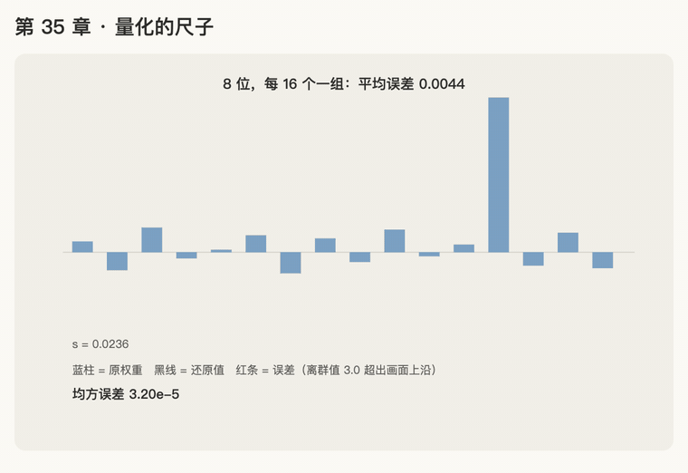

第 35 章 · 量化与导出：模型变小、脱离 Python 部署
本章回答：量化是怎么把 float 变成 int8 / int4 的，误差从哪来？weight-only 和动态激活量化有什么不同？
torch.export导出的是什么，AOTInductor 又把它变成了什么？
讲解日期：2026-11-15 · 上一章：第 34 章 C++ / CUDA 扩展 · 下一章：第 36 章 benchmark 与正确性
对应原文：AISPE ch13「PyTorch 架构优化（torchao）、量化、稀疏性和剪枝」（ch13.md第 997–1006 行）；torchao 文档与 README（〔在线〕github.com/pytorch/ao）；官方文档torch.export、AOTInductor（〔在线〕）；LLM 全链路地图量化部分（llm-full-stack/notes/00-full-stack-map.md）；本章量化误差、文件大小和导出结果是本机 torch 2.15.0 + torchao 0.18.0 实测本章缩写：int8 / int4 = 8 / 4 位整数；PTQ = Post-Training Quantization（训练后 / 量化）；QAT = Quantization-Aware Training（量化 / 感知 / 训练）；AOT = Ahead-Of-Time（提前编译）；
.pt2= PyTorch 2 的导出包格式；ExecuTorch = PyTorch 的端侧（手机、嵌入式）运行时；全部缩写见 附录 · 缩写与术语表
讲解
第一步：量化 = 一把更粗的尺子 + 一个缩放系数（2026-11-15）
类比：用整数刻度记身高。 尺子只有 −127 到 127 的整数刻度，先约定"1 格 = 多少厘米"（缩放系数 scale），量的时候数格子，用的时候格子数 × scale 还原。
对称 int8 量化：
读法：s 是每一格代表的大小；q 是整数（存这个）；\(\hat w\) 是还原出来的近似值。
数字演示：\(w = [-0.6, 0.2, 1.0]\)：
| int8（最大 127） | int4（最大 7） | |
|---|---|---|
| s | 1.0 / 127 = 0.00787 | 1.0 / 7 = 0.143 |
| q | [−76, 25, 127] | [−4, 1, 7] |
| 还原 \(\hat w\) | [−0.598, 0.197, 1.000] | [−0.571, 0.143, 1.000] |
| 最大误差 | 0.003 | 0.057 |
int4 的格子粗了 18 倍，误差大得多。（例子特意避开了 \(w/s\) 正好落在两个整数正中间的情况，比如 −0.5 ÷ (1/7) = −3.5：那时舍入方向取决于浮点误差，float32 和 float64 可能一个给 −3、一个给 −4。）所以 int4 一般分组：每 32 / 64 / 128 个权重共用一个 s（group-wise，分组量化），一个离群值只拖累自己那一组（和第 26 章 FP8 的分块缩放同一个思路）。
一句话：量化 = 选缩放系数 s，存 round(w / s) 的整数，用时乘回 s；位数越少格子越粗，int4 要分组缩放。
第二步：量化什么——权重、激活（2026-11-15）
| 方案 | 量化什么 | 计算怎么做 | 适合 |
|---|---|---|---|
| weight-only（只量化权重） | 权重存 int8 / int4 | 算的时候反量化回 bf16 再乘 | LLM decode：访存受限（第 30 章），权重字节减少直接提速 |
| 动态激活 + 权重 | 权重 int8，激活每次按当前值现算 s 量化 | int8 × int8 矩阵乘 | 算力受限的场景（大 batch、prefill） |
| FP8（第 26 章） | 权重和激活都 FP8 | FP8 张量核心 | H100 及以后 |
为什么 weight-only 对 decode 特别有效：第 30 章算过，batch 1 decode 的上限 = 带宽 ÷ 权重字节。bf16 → int4，字节变成 1/4，上限理论上 ×4（实际受反量化开销影响，通常 2–3 倍）。
实测（torchao，本机 CPU）：两层 Linear(1024, 1024)，Int8WeightOnlyConfig：
from torchao.quantization import quantize_, Int8WeightOnlyConfig
quantize_(model, Int8WeightOnlyConfig()) # 原地把 Linear 的权重换成 int8 张量子类
| fp32 | int8 weight-only | |
|---|---|---|
| state_dict 大小 | 8.01 MB | 2.02 MB |
| 输出相对误差 | — | 0.56% |
量化后权重变成一个叫 Int8Tensor 的张量子类：它在第 3 章分派梯子的 Python 层（__torch_dispatch__）拦截矩阵乘，换成"反量化 + 乘"或专门的 int8 kernel。torchao 0.18 里可用的配置还有 Int4WeightOnlyConfig、Int8DynamicActivationInt8WeightConfig、Float8DynamicActivationFloat8WeightConfig 等（名字随版本变，以文档为准）；int4 的快速 kernel 需要 CUDA。
PTQ vs QAT：上面是训练完直接量化（PTQ）；精度掉得多时，可以在训练中模拟量化误差（QAT，torchao 也支持），让模型适应。
一句话：decode 用 weight-only（字节少 = 快），大 batch 才考虑激活也量化；torchao 用张量子类替换权重；实测 int8 权重 4 倍压缩、误差 0.56%。
第三步：torch.export——把模型抓成一张完整的图（2026-11-15）
torch.compile 是"边跑边编"，允许断图、回 Python。部署时我们要的是一张完整、不依赖 Python 代码的图：
ep = torch.export.export(model, (x,)) # 返回 ExportedProgram
print(ep.graph_module.code)
实测输出（两层 MLP）：
def forward(self, p_0_weight, p_0_bias, p_2_weight, p_2_bias, input):
linear = torch.ops.aten.linear.default(input_1, p_0_weight, p_0_bias)
gelu = torch.ops.aten.gelu.default(linear)
linear_1 = torch.ops.aten.linear.default(gelu, p_2_weight, p_2_bias)
return (linear_1,)
和 compile 的区别：
torch.compile |
torch.export |
|
|---|---|---|
| 遇到抓不了的 | 断图，回 Python 继续跑 | 报错，必须改到能完整抓下来 |
| 输出 | 加速后的可调用对象 | ExportedProgram：参数 + 一张 ATen 算子图，可序列化 |
| 形状 | 自动处理 | 默认按示例输入固定；变的维度要声明 |
声明动态维度（实测导出后 batch 5 也能跑）：
batch = torch.export.Dim("batch", min=1, max=64)
ep = torch.export.export(model, (x,), dynamic_shapes={"input": {0: batch}})
torch.export.save(ep, "model.pt2")
自定义算子要导出，必须有 fake 实现（第 33 章）。
一句话：export 把模型抓成一张完整的 ATen 图（抓不下就报错），变的维度用 Dim 声明，可以存成 .pt2。
第四步：AOTInductor——提前编译成不需要 Python 的包（2026-11-15）
export 出来的图还要有人去执行。AOTInductor 用第 6 章的 Inductor 提前把它编译成机器码，打成一个 .pt2 包：
path = torch._inductor.aoti_compile_and_package(ep, package_path="model.pt2")
runner = torch._inductor.aoti_load_package(path) # Python 里加载
y = runner(torch.randn(5, 16))
实测：编译打包 4.1 秒；加载后 batch 5 输入能跑，和原模型输出一致（allclose = True）。
同一个 .pt2 也能在 C++ 里加载执行（torch::inductor::AOTIModelPackageLoader），服务进程里完全不用 Python。
部署路线一览：
| 目标 | 路线 |
|---|---|
| Python 服务、要最快 | torch.compile（+ 第 28、30 章的 CUDA Graph） |
| C++ 服务、没有 Python | torch.export → AOTInductor .pt2 |
| 手机 / 嵌入式 | torch.export → ExecuTorch |
| LLM 在线服务 | vLLM / SGLang（内部用 PyTorch + 自定义 kernel + 量化 + 连续批处理），见 LLM 全链路地图 |
一句话：AOTInductor 把导出的图提前编译成 .pt2 包，Python 和 C++ 都能加载；LLM 服务直接用 vLLM / SGLang。
动画演示：量化的尺子

可交互版：animations/35-quantize.html。滑块调位数（2–8 位）和分组大小。
怎么看：
- 上面是一组权重（编的，带一个离群值 3.0），下面是量化后的整数格子；
- 每个权重画一条线连到最近的格子，红色是还原误差；
- 位数从 8 拖到 4：格子变粗、误差变大；
- 打开分组：离群值所在的组格子粗，其他组格子细，总误差下降。
练习与作答记录
题 1：权重 \([0.3, -0.9, 0.6]\)，对称 int8 量化。s、q、还原值各是多少？
作答：（待作答）
题 2：7B 模型 bf16 权重 14 GB。int4 weight-only（每参数 0.5 字节，先忽略缩放系数）后多大？batch 1 decode 理论上限变成原来的几倍？
作答：（待作答）
题 3：一个模型 torch.compile 能跑，但 torch.export 报错。最可能是什么原因？（提示：第 6 章）
作答：（待作答）
口诀
量化是粗尺子加系数：s 等于最大绝对值除以 127，存 round(w/s)，用时乘回 s；
位数越少格子越粗，int4 要分组；decode 吃带宽，weight-only 最划算；
export 抓整图、抓不下就报错，Dim 声明会变的维；AOTInductor 提前编成 .pt2，C++ 也能跑。
本章复习卡片
- P128（对称量化公式；[−0.6, 0.2, 1.0] int8 → [−76, 25, 127]、最大误差 0.003；int4 → [−4, 1, 7]、误差 0.057，要分组）
- P129（weight-only vs 动态激活量化；decode 为什么用 weight-only；torchao 张量子类；实测 8.01 → 2.02 MB、误差 0.56%）
- P130（torch.export：完整 ATen 图、抓不下报错、Dim 动态维、fake 实现必需）
- P131（AOTInductor：aoti_compile_and_package / aoti_load_package，实测 4.1 s；部署路线表）
附录 · 延伸阅读
推荐阅读
| 读什么 | 读哪里 | 读它为了什么 |
|---|---|---|
| ★ torchao README | "Quantization"、"Inference" 表格（〔在线〕github.com/pytorch/ao） | 各配置的速度 / 精度数字和用法 |
★ 官方文档 torch.export |
"Expressing Dynamism"、"Graph Breaks"（〔在线〕） | 导出规则 |
| 官方文档 AOTInductor | 全文（〔在线〕docs.pytorch.org/docs/stable/torch.compiler_aot_inductor.html） | Python / C++ 加载 |
| AISPE 第 13 章 | ch13.md 第 997–1006 行 |
torchao 在训练与推理中的位置 |
| Frantar et al. 2022「GPTQ」、Lin et al. 2023「AWQ」 | 方法部分（〔在线〕arXiv:2210.17323、2306.00978） | 更好的 int4 权重量化算法 |
| LLM 全链路地图 | 量化部分 | 推理服务里的量化选型 |
数学原理
- 对称量化：\(s = \max|w| / (2^{b-1} - 1)\)，\(q = \text{round}(w/s)\)，误差 \(|w - \hat w| \le s/2\)。
- 非对称量化：加零点 z，\(q = \text{round}(w/s) + z\)，适合不以 0 为中心的分布（如 ReLU 后的激活）。
- 分组的好处：误差上限 \(s/2\) 正比于组内 \(\max|w|\)，离群值只放大自己那组的 s。
公式清单
| 写法 | 意思 |
|---|---|
| \(s = \max\lvert w\rvert / 127\)，\(q = \text{round}(w/s)\)，\(\hat w = qs\) | 对称 int8 |
quantize_(model, Int8WeightOnlyConfig()) |
torchao 量化 |
torch.export.export(m, args, dynamic_shapes=...) / torch.export.save |
导出 |
torch._inductor.aoti_compile_and_package(ep) / aoti_load_package(path) |
AOTInductor |
代码对照：把本章的数字用代码算一遍
用 torch 把讲义里的数字跑一遍。代码在仓库本地
pytorch-deep-dive/solutions/chapter-code/ch35_quant_export.py，配套测试tests/test_ch29_36.py；同一章的 notebook：notebooks/ch35_quant_export.ipynb（讲解和代码放在一起，一格一格边读边跑）。Mac 上直接能跑，不需要 GPU：
bash cd pytorch-deep-dive/solutions/chapter-code uv run python ch35_quant_export.py # 一步一步打印 uv run pytest tests/test_ch29_36.py
讲义 ↔ 代码：
| 讲义 | 公式 / 说法 | 写法 | 跑出来 |
|---|---|---|---|
| 第一步 对称量化 | s = max | w | /127 |
| 第一步 int4 | s = max | w | /7 |
| 第二步 torchao | Int8WeightOnlyConfig | int8_weight_only() |
8.01 → 2.02 MB，误差 0.56%，Int8Tensor |
| 第三、四步 export + AOTInductor | — | export_and_aoti() |
linear / gelu / linear；batch 5；一致 |
关键几行：
quantize_(model, Int8WeightOnlyConfig())
ep = torch.export.export(m, (x,), dynamic_shapes={"input": {0: batch}})
path = torch._inductor.aoti_compile_and_package(ep, package_path=...)
runner = torch._inductor.aoti_load_package(path)
代码里才看得到的 2 件事：
- 正好落在两个整数中间的值不稳：−0.5 ÷ (1/7) = −3.5，float32 下得 −3、float64 下得 −4，所以例子换成了 −0.6。
- torchao 的配置名随版本变：本机是 0.18.0。
自己改一改（不影响练习答案）：
symmetric_quant([0.01, 0.02, 5.0], 8)，看小数被量化成什么。- 把
Int8WeightOnlyConfig换成Int8DynamicActivationInt8WeightConfig，看误差。